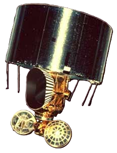
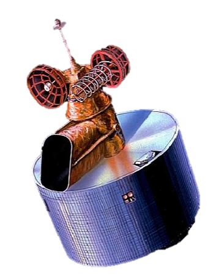
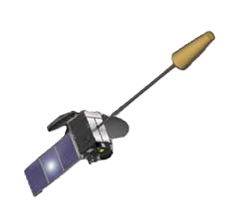
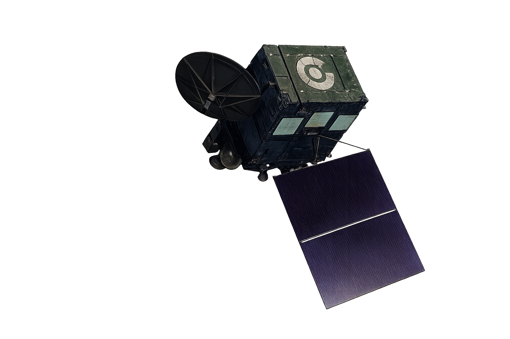
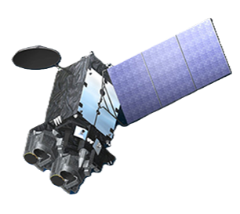
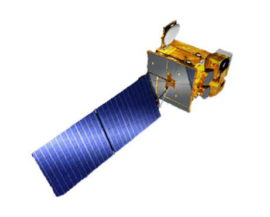
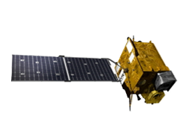
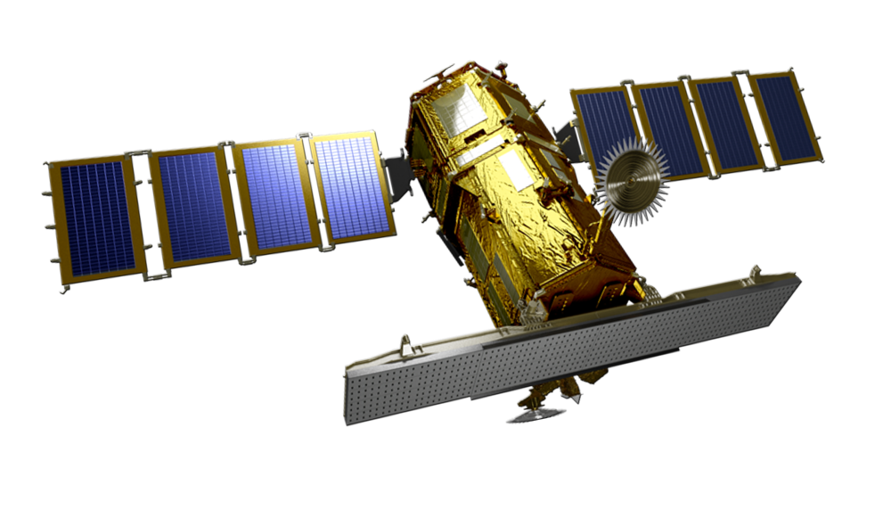

■ 自旋穩定體制
■ 日本首代靜止衛星
■ 搭載 VISSR 感測器

■ 新增水氣觀測頻道
■ 自旋體制技術終點

■ 轉換為三軸穩定
■ 強化夜間低雲觀測
■ 兼具氣象與航管

■ AHI 進階成像儀
■ 16 個觀測波段
■ 10分鐘全圓盤掃描

■ 高光譜紅外探測儀
■ 3D 垂直剖面觀測


■ 韓國首顆靜止軌道星
■ 複合氣象/海洋觀測

■ AMI 成像儀 (16波段)
■ GEMS 大氣環境監測

■ 18 通道成像技術
■ 強化極端天氣追蹤